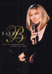

MUSIC VIDEOS
| The 1916 Easter Rising
Year: 2012 Language: EN Format: mp4 Resolution: 480p
|
| ABBA Gold: Greatest Hits
Year: 2003 Language: EN Format: mp4 Resolution: 576p
|
| Alejandro Fernández: De Rey A Rey
Year: 2024 Language: ES Format: mp4 Resolution: 720p
|
| An Evening With Charles Aznavour
Year: 1985 Language: FR Format: mp4 Resolution: 480p
|
| Un Azteca En El Azteca
Year: 2016 Language: ES Format: mp4 Resolution: 480p
|
| Barbra Streisand: One Voice
Year: 1986 Language: EN Format: mp4 Resolution: 720p
|
|  | Barbra: The Concert
Year: 1994 Language: EN Format: mp4 Resolution: 480p
|
| Bon Anniversaire Charles
Year: 2012 Language: FR Format: mp4 Resolution: 576p
|
| Bon Anniversaire Charles: Palais des Congrès 2004
Year: 2004 Language: FR Format: mp4 Resolution: 576p
|
| Cancionero Peronista
Year: 2021 Language: ES Format: mp4 Resolution: 1080p
|
| Cancionero Peronista:un grito de corazon
Year: 2024 Language: ES Format: mp4 Resolution: 720p
|
| Charles Aznavour - Live au Palais des Congrès
Year: 2000 Language: FR Format: mp4 Resolution: 576p
|
| Charles Aznavour: Palais de Congrès 1997
Year: 1997 Language: FR Format: mp4 Resolution: 576p
|
| Color Me Barbra
Year: 1966 Language: EN Format: mp4 Resolution: 480p
|
| Dame Shirley Bassey: BBC Electric Proms
Year: 2009 Language: EN Format: mp4 Resolution: 1080p
|
| Edith Piaf: Hits et Legendes
Year: 2003 Language: FR Format: mp4 Resolution: 576p
|

| Édith Piaf: L'Hymne à la môme
Year: 2008 Language: FR Format: mp4 Resolution: 576p
|
| Edith Piaf: The Perfect Concert
Year: 2009 Language: FR Format: mp4 Resolution: 576p
|
| A Happening in Central Park
Year: 1968 Language: EN Format: mp4 Resolution: 720p
|
| Jacques Brel: Les Adieux à l'Olympia
Year: 1966 Language: FR Format: mp4 Resolution: 480p
|
| Josh Groban: In Concert
Year: 2002 Language: EN Format: mp4 Resolution: 480p
|
| Maria Callas: At Covent Garden, 1962 and 1964
Year: 1962 Language: EN Format: mp4 Resolution: 576p
|
| Marlene Dietrich Live In London 1972
Year: 2012 Language: EN, DE Format: mp4 Resolution: 576p
|
| Mes anées Olympia
Year: 2012 Language: FR Format: mp4 Resolution: 480p
|
| Mireille Mathieu: Palais des Congrès 1990
Year: 1990 Language: EN Format: mp4 Resolution: 576p
|
| My Name Is Barbra
Year: 1965 Language: EN Format: mp4 Resolution: 480p
|
| Nana Mouskouri - Live at the Royal Albert Hall
Year: 2012 Language: EL, EN, FR Format: mp4 Resolution: 480p
|
| Pedro Fernández - Festival Viña del Mar
Year: 1998 Language: ES Format: mp4 Resolution: 1080p
|
| Pedro Fernández en concierto Auditorio Nacional CDMX
Year: 2006 Language: ES Format: mp4 Resolution: 1080p
|
| Pedro Fernández: Concierto Fiesta de la Indepencía de Tacla
Year: 2019 Language: ES Format: mp4 Resolution: 1080p
|
| Pedro Fernández: Festival de Acapulco
Year: 2017 Language: ES Format: mp4 Resolution: 720p
|
| Pedro Fernández: Festival del Huaso de Olmué
Year: 2017 Language: ES Format: mp4 Resolution: 720p
|
| Pedro Fernández: Festival Viña del Mar
Year: 2001 Language: ES Format: mp4 Resolution: 1080p
|
| Pedro Fernández: Te doy la vida
Year: 2024 Language: ES Format: mp4 Resolution: 1080p
|
| Shirley Bassey - You Ain't Heard Nothing Yet
Year: 1985 Language: EN Format: mp4 Resolution: 1080p
|
| Shirley Bassey Live In Cardiff
Year: 1993 Language: EN Format: mp4 Resolution: 480p
|
| Shirley Bassey Live in Sydney (1978)
Year: 1978 Language: EN Format: mp4 Resolution: 1080p
|
| Shirley Bassey: Divas Are Forever
Year: 2000 Language: EN Format: mp4 Resolution: 480p
|
| Shirley Bassey: Live at the Royal Albert Hall
Year: 1973 Language: EN Format: mp4 Resolution: 1080p
|
| Shirley Bassey: Live in Berlin 1987
Year: 1987 Language: EN Format: mp4 Resolution: 720p
|
| Shirley Bassey: Live In Japan
Year: 1994 Language: EN Format: mp4 Resolution: 720p
|
| Shirley Bassey: Viva Diva
Year: 1998 Language: EN Format: mp4 Resolution: 1080p
|
| Streisand: Live in Concert 2006
Year: 2009 Language: EN Format: mp4 Resolution: 720p
|